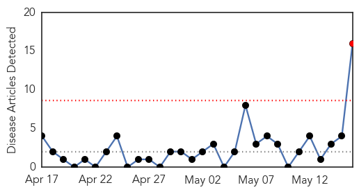

30 Day Trends
Web: 1 alerts, 0 warnings
Twitter: 0 alerts, 0 warnings
Top Articles:
- 0.854
- Service members required to get hepatitis B immunization
- 0.779
- Insulin pens: 3,100 Hospital Patients At Risk Of Disease After Misuse Of Insulin Pens
- 0.751
- Griffin Hospital to 3,100 patients: Get tested for hepatitis and HIV
- 0.747
- KFVS12 News & Weather Cape Girardeau, Carbondale, Poplar Bluff
- 0.715
- Oli, Nepal getting better
- 0.696
- LETTER: Griffin Hospital Alerts Patients
- 0.666
- Hospital Mistake Leaves 3,000 Patients At Risk For HIV Infection
- 0.661
- More than 3,100 diabetes patients exposed to HIV risk
- 0.660
- Hospital Warns Of Possibly Tainted Insulin Pens « CBS Connecticut
- 0.658
- Griffin patients warned about insulin pens Republican American
- 0.640
- Connecticut hospital warns of insulin pen problem
- 0.594
- Griffin Hospital says device misuse could have infected patients
- 0.593
- Insulin pen misuse could have infected patients with diseases
- 0.539
- Insulin pen misuse could have infected patients with diseases
- 0.539
- Insulin pen misuse could have infected patients with diseases
- 0.531
- Griffin Hospital: Insulin pen misuse could have infected patients with diseases
Top Tweets:
-
No tweets found for May 16, 2014
Web/News Articles
Tweets